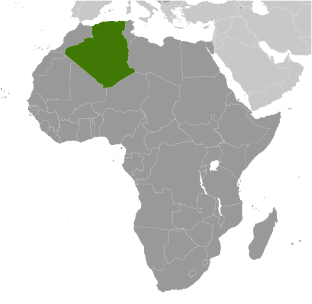
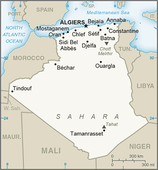

Africa :: ALGERIA
Introduction :: ALGERIA
-
After more than a century of rule by France, Algerians fought through much of the 1950s to achieve independence in 1962. Algeria's primary political party, the National Liberation Front (FLN), was established in 1954 as part of the struggle for independence and has since largely dominated politics. The Government of Algeria in 1988 instituted a multi-party system in response to public unrest, but the surprising first round success of the Islamic Salvation Front (FIS) in the December 1991 balloting led the Algerian army to intervene and postpone the second round of elections to prevent what the secular elite feared would be an extremist-led government from assuming power. The army began a crackdown on the FIS that spurred FIS supporters to begin attacking government targets. Fighting escalated into an insurgency, which saw intense violence from 1992-98, resulting in over 100,000 deaths - many attributed to indiscriminate massacres of villagers by extremists. The government gained the upper hand by the late-1990s, and FIS's armed wing, the Islamic Salvation Army, disbanded in January 2000.Abdelaziz BOUTEFLIKA, with the backing of the military, won the presidency in 1999 in an election widely viewed as fraudulent and won subsequent elections in 2004, 2009, and 2014. The government in 2011 introduced some political reforms in response to the Arab Spring, including lifting the 19-year-old state of emergency restrictions and increasing women's quotas for elected assemblies, while also increasing subsidies to the populace. Since 2014, Algeria’s reliance on hydrocarbon revenues to fund the government and finance the large subsidies for the population has fallen under stress because of declining oil prices.
Geography :: ALGERIA
-
Northern Africa, bordering the Mediterranean Sea, between Morocco and Tunisia28 00 N, 3 00 EAfricatotal: 2,381,741 sq kmland: 2,381,741 sq kmwater: 0 sq kmcountry comparison to the world: 11slightly less than 3.5 times the size of Texastotal: 6,734 kmborder countries (7): Libya 989 km, Mali 1,359 km, Mauritania 460 km, Morocco 1,900 km, Niger 951 km, Tunisia 1,034 km, Western Sahara 41 km998 kmterritorial sea: 12 nmexclusive fishing zone: 32-52 nmarid to semiarid; mild, wet winters with hot, dry summers along coast; drier with cold winters and hot summers on high plateau; sirocco is a hot, dust/sand-laden wind especially common in summermostly high plateau and desert; some mountains; narrow, discontinuous coastal plainmean elevation: 800 melevation extremes: lowest point: Chott Melrhir -40 mhighest point: Tahat 2,908 mpetroleum, natural gas, iron ore, phosphates, uranium, lead, zincagricultural land: 17.4%arable land 18.02%; permanent crops 2.34%; permanent pasture 79.63%forest: 0.82%other: 81.8% (2014 est.)13,600 sq km (2014)the vast majority of the populace is found in the extreme northern part of the country along the Mediterranean Coastmountainous areas subject to severe earthquakes; mudslides and floods in rainy season; droughtssoil erosion from overgrazing and other poor farming practices; desertification; dumping of raw sewage, petroleum refining wastes, and other industrial effluents is leading to the pollution of rivers and coastal waters; Mediterranean Sea, in particular, becoming polluted from oil wastes, soil erosion, and fertilizer runoff; inadequate supplies of potable waterparty to: Biodiversity, Climate Change, Climate Change-Kyoto Protocol, Desertification, Endangered Species, Environmental Modification, Hazardous Wastes, Law of the Sea, Ozone Layer Protection, Ship Pollution, Wetlandssigned, but not ratified: none of the selected agreementslargest country in Africa
People and Society :: ALGERIA
-
40,969,443 (July 2017 est.)country comparison to the world: 33noun: Algerian(s)adjective: AlgerianArab-Berber 99%, European less than 1%note: although almost all Algerians are Berber in origin (not Arab), only a minority identify themselves as Berber, about 15% of the total population; these people live mostly in the mountainous region of Kabylie east of Algiers; the Berbers are also Muslim but identify with their Berber rather than Arab cultural heritage; Berbers have long agitated, sometimes violently, for autonomy; the government is unlikely to grant autonomy but has offered to begin sponsoring teaching Berber language in schoolsArabic (official), French (lingua franca), Berber or Tamazight (official); dialects include Kabyle Berber (Taqbaylit), Shawiya Berber (Tacawit), Mzab Berber, Tuareg Berber (Tamahaq)Muslim (official; predominantly Sunni) 99%, other (includes Christian and Jewish) <1% (2012 est.)For the first two-thirds of the 20th century, Algeria’s high fertility rate caused its population to grow rapidly. However, about a decade after independence from France in 1962 the total fertility rate fell dramatically from 7 children per woman in the 1970s to about 2.4 in 2000, slowing Algeria’s population growth rate by the late 1980s. The lower fertility rate was mainly the result of women’s rising age at first marriage (virtually all Algerian children being born in wedlock) and to a lesser extent the wider use of contraceptives. Later marriages and a preference for smaller families are attributed to increases in women’s education and participation in the labor market; higher unemployment; and a shortage of housing forcing multiple generations to live together. The average woman’s age at first marriage increased from about 19 in the mid-1950s to 24 in the mid-1970s to 30.5 in the late 1990s.Algeria’s fertility rate experienced an unexpected upturn in the early 2000s, as the average woman’s age at first marriage dropped slightly. The reversal in fertility could represent a temporary fluctuation in marriage age or, less likely, a decrease in the steady rate of contraceptive use.Thousands of Algerian peasants – mainly Berber men from the Kabylia region – faced with land dispossession and economic hardship under French rule migrated temporarily to France to work in manufacturing and mining during the first half of the 20th century. This movement accelerated during World War I, when Algerians filled in for French factory workers or served as soldiers. In the years following independence, low-skilled Algerian workers and Algerians who had supported the French (harkis) emigrated en masse to France. Tighter French immigration rules and Algiers’ decision to cease managing labor migration to France in the 1970s limited legal emigration largely to family reunification.Not until Algeria’s civil war in the 1990s did the country again experience substantial outmigration. Many Algerians legally entered Tunisia without visas claiming to be tourists and then stayed as workers. Other Algerians headed to Europe seeking asylum, although France imposed restrictions. Sub-Saharan African migrants came to Algeria after its civil war to work in agriculture and mining. In the 2000s, a wave of educated Algerians went abroad seeking skilled jobs in a wider range of destinations, increasing their presence in North America and Spain. At the same time, legal foreign workers principally from China and Egypt came to work in Algeria’s construction and oil sectors. Illegal migrants from sub-Saharan Africa, particularly Malians, Nigeriens, and Gambians, continue to come to Algeria in search of work or to use it as a stepping stone to Libya and Europe.Since 1975, Algeria also has been the main recipient of Sahrawi refugees from the ongoing conflict in Western Sahara. An estimated 90,000 Sahrawis live in five refugee camps in southwestern Algeria near Tindouf.0-14 years: 29.31% (male 6,148,568/female 5,858,922)15-24 years: 15.3% (male 3,208,185/female 3,061,179)25-54 years: 42.93% (male 8,906,160/female 8,682,894)55-64 years: 6.81% (male 1,410,298/female 1,378,282)65 years and over: 5.65% (male 1,079,218/female 1,235,737) (2017 est.)total dependency ratio: 52.7youth dependency ratio: 43.8elderly dependency ratio: 9potential support ratio: 11.2 (2015 est.)total: 28.1 yearsmale: 27.8 yearsfemale: 28.4 years (2017 est.)country comparison to the world: 1371.7% (2017 est.)country comparison to the world: 6222.2 births/1,000 population (2017 est.)country comparison to the world: 694.3 deaths/1,000 population (2017 est.)country comparison to the world: 206-0.9 migrant(s)/1,000 population (2017 est.)country comparison to the world: 138the vast majority of the populace is found in the extreme northern part of the country along the Mediterranean Coasturban population: 71.9% of total population (2017)rate of urbanization: 2.26% annual rate of change (2015-20 est.)ALGIERS (capital) 2.594 million; Oran 858,000 (2015)at birth: 1.05 male(s)/female0-14 years: 1.05 male(s)/female15-24 years: 1.05 male(s)/female25-54 years: 1.02 male(s)/female55-64 years: 1.03 male(s)/female65 years and over: 0.86 male(s)/femaletotal population: 1.03 male(s)/female (2016 est.)140 deaths/100,000 live births (2015 est.)country comparison to the world: 62total: 19.6 deaths/1,000 live birthsmale: 21.2 deaths/1,000 live birthsfemale: 17.9 deaths/1,000 live births (2017 est.)country comparison to the world: 81total population: 77 yearsmale: 75.6 yearsfemale: 78.4 years (2017 est.)country comparison to the world: 782.7 children born/woman (2017 est.)country comparison to the world: 6657.1% (2012/13)7.2% of GDP (2014)country comparison to the world: 741.19 physicians/1,000 population (2007)improved:urban: 84.3% of populationrural: 81.8% of populationtotal: 83.6% of populationunimproved:urban: 15.7% of populationrural: 18.2% of populationtotal: 16.4% of population (2015 est.)improved:urban: 89.8% of populationrural: 82.2% of populationtotal: 87.6% of populationunimproved:urban: 10.2% of populationrural: 17.8% of populationtotal: 12.4% of population (2015 est.)<.01% (2016 est.)13,000 (2016 est.)country comparison to the world: 85<200 (2016 est.)27.4% (2016)country comparison to the world: 383% (2012)country comparison to the world: 1024.3% of GDP (2008)country comparison to the world: 97definition: age 15 and over can read and writetotal population: 80.2%male: 87.2%female: 73.1% (2015 est.)total: 14 yearsmale: 14 yearsfemale: 15 years (2011)total: 25.2%male: 22.1%female: 41.5% (2014 est.)country comparison to the world: 47
Government :: ALGERIA
-
conventional long form: People's Democratic Republic of Algeriaconventional short form: Algerialocal long form: Al Jumhuriyah al Jaza'iriyah ad Dimuqratiyah ash Sha'biyahlocal short form: Al Jaza'iretymology: the country name derives from the capital city of Algierspresidential republicname: Algiersgeographic coordinates: 36 45 N, 3 03 Etime difference: UTC+1 (6 hours ahead of Washington, DC, during Standard Time)48 provinces (wilayas, singular - wilaya); Adrar, Ain Defla, Ain Temouchent, Alger, Annaba, Batna, Bechar, Bejaia, Biskra, Blida, Bordj Bou Arreridj, Bouira, Boumerdes, Chlef, Constantine, Djelfa, El Bayadh, El Oued, El Tarf, Ghardaia, Guelma, Illizi, Jijel, Khenchela, Laghouat, Mascara, Medea, Mila, Mostaganem, M'Sila, Naama, Oran, Ouargla, Oum el Bouaghi, Relizane, Saida, Setif, Sidi Bel Abbes, Skikda, Souk Ahras, Tamanrasset, Tebessa, Tiaret, Tindouf, Tipaza, Tissemsilt, Tizi Ouzou, Tlemcen5 July 1962 (from France)Revolution Day, 1 November (1954)history: several previous; latest approved by referendum 23 February 1989amendments: proposed by the president of the republic or through the president with the support of three-fourths of the members of both houses of Parliament in joint session; passage requires approval by both houses, approval by referendum, and promulgation by the president; the president can forego a referendum if the Constitutional Council determines the proposed amendment does not conflict with basic constitutional principles; articles including the republican form of government, the integrity and unity of the country, and fundamental citizens’ liberties and rights cannot be amended; amended several times, last in 2016 (2016)mixed legal system of French civil law and Islamic law; judicial review of legislative acts in ad hoc Constitutional Council composed of various public officials including several Supreme Court justiceshas not submitted an ICJ jurisdiction declaration; non-party state to the ICCtcitizenship by birth: nocitizenship by descent only: the mother must be a citizen of Algeriadual citizenship recognized: noresidency requirement for naturalization: 7 years18 years of age; universalchief of state: President Abdelaziz BOUTEFLIKA (since 28 April 1999)head of government: Prime Minister Ahmed OUYAHIA (since 16 August 2017)cabinet: Cabinet of Ministers appointed by the presidentelections/appointments: president directly elected by absolute majority popular vote in two rounds if needed for a 5-year term (2-term limit reinstated by constitutional amendment in February 2016); election last held on 17 April 2014 (next to be held in April 2019); prime minister nominated by the president from the majority party in Parliamentelection results: Abdelaziz BOUTEFLIKA reelected president for a fourth term; percent of vote - Abdelaziz BOUTEFLIKA (FLN) 81.5%, Ali BENFLIS (FLN) 12.2%, Abdelaziz BELAID (Future Front) 3.4%, other 2.9%description: bicameral Parliament consists of the Council of the Nation (upper house with 144 seats; one-third of members appointed by the president, two-thirds indirectly elected by simple majority vote by an electoral college composed of local council members; members serve 6-year terms with one-half of the membership renewed every 3 years) and the National People's Assembly (lower house with 462 seats including 8 seats for Algerians living abroad); members directly elected in multi-seat constituencies by proportional representation vote to serve 5-year terms)elections: Council of the Nation - last held on 29 December 2015 (next to be held in December 2018); National People's Assembly - last held on 4 May 2017 (next to be held in 2022)election results: Council of the Nation - percent of vote by party - NA; seats by party - NA; National People's Assembly - percent of vote by party - NA; seats by party - FLN 164, RND 97, MSP-FC 33, TAJ 19, Ennahda-FJD 15, FFS 14, El Mostakbel 14, MPA 13, PT 11, RCD 9, ANR 8, MEN 4, other 33, independent 28highest court(s): Supreme Court or Cour Supreme (consists of 150 judges organized into 4 divisions: civil and commercial; social security and labor; criminal; and administrative; Constitutional Council (consists of 12 members including the court chairman and deputy chairman); note - Algeria's judicial system does not include sharia courtsjudge selection and term of office: Supreme Court judges appointed by the High Council of Magistracy, an administrative body presided over by the president of the republic, and includes the republic vice-president and several members; judges appointed for life; Constitutional Council members - 4 appointed by the president of the republic, 2 each by the 2 houses of Parliament, 2 by the Supreme Court, and 2 by the Council of State; Council president and members appointed for single 6-year terms with half the membership renewed every 3 yearssubordinate courts: appellate or wilaya courts; first instance or daira tribunalsAlgerian National Front or FNA [Moussa TOUATI]Algerian Popular Movement or MPA [Amara BENYOUNES]Algerian Rally or RA [Ali ZAGHDOUD]Algeria's Hope Rally or TAJ [Amar GHOUL]Dignity or El Karama [Mohamed BENHAMOU]Ennour El Djazairi Party (Algerian Radiance Party) or PED [Badreddine BELBAZ]Front for Change or FC [Abdelmadjid MENASRA]Front for Justice and Development or El Adala [Abdallah DJABALLAH]Future Front or El Mostakbel [Abdelaziz BELAID]Green Algeria Alliance or AAV [Bouguerra SOLTANI] (includes Islah, Ennahda Movement, and MSP)Islamic Renaissance Movement or Ennahda Movement [Mohamed DOUIBI]Justice and Development Front or FJDMovement of National Understanding or MENMovement for National Reform or Islah [Djilali GHOUINI]Movement of Society for Peace or MSP [Abderrazak MOKRI]National Democratic Rally (Rassemblement National Democratique) or RND [Ahmed OUYAHIA]National Front for Social Justice or FNJS [Khaled BOUNEDJEMA]National Liberation Front or FLN [Djamel OULD ABBES]National Party for Solidarity and Development or PNSD [Dalila YALAQUI]National Reform Movement or Islah [Djahid YOUNSI]National Republican Alliance or ANR [Redha MALEK]New Dawn Party or PFJ [Tahar BENBAIBECHE]New Generation or Jil Jadid [Soufiane DJILALI]Oath of 1954 or Ahd 54 [Ali Fawzi REBAINE]Party of Justice and Liberty [Mohammed SAID]Rally for Culture and Democracy or RCD [Mohcine BELABBAS]Rally for Hope in Algeria or TAJSocialist Forces Front or FFS [Mustafa BOUCHACHI]Union of Democratic and Social Forces or UFDS [Noureddine BAHBOUH]Vanguard of Freedoms [Ali BENFLIS]Youth Party or PJ [Hamana BOUCHARMA]Workers Party or PT [Louisa HANOUNE]note: a law banning political parties based on religion was enacted in March 1997Algerian League for the Defense of Human Rights or LADDH [Noureddine BENISSAD]SOS Disparus [Nacera DUTOUR]Youth Action Rally or RAJABEDA, AfDB, AFESD, AMF, AMU, AU, BIS, CAEU, CD, FAO, G-15, G-24, G-77, IAEA, IBRD, ICAO, ICC (national committees), ICRM, IDA, IDB, IFAD, IFC, IFRCS, IHO, ILO, IMF, IMO, IMSO, Interpol, IOC, IOM, IPU, ISO, ITSO, ITU, ITUC (NGOs), LAS, MIGA, MONUSCO, NAM, OAPEC, OAS (observer), OIC, OPCW, OPEC, OSCE (partner), UN, UNCTAD, UNESCO, UNHCR, UNIDO, UNITAR, UNWTO, UPU, WCO, WHO, WIPO, WMO, WTO (observer)chief of mission: Ambassador Madjid BOUGUERRA (since 23 February 2015)chancery: 2118 Kalorama Road NW, Washington, DC 20008telephone: [1] (202) 265-2800FAX: [1] (202) 986-5906consulate(s) general: New Yorkchief of mission: Ambassador John P. DESROCHER (since 7 September 2017)embassy: 05 Chemin Cheikh Bachir, El Ibrahimi, El-Biar 16030 Algieriamailing address: B. P. 408, Alger-Gare, 16030 Algierstelephone: [213] (0) 770-08-2000FAX: [213] (0) 770-08-2064two equal vertical bands of green (hoist side) and white; a red, 5-pointed star within a red crescent centered over the two-color boundary; the colors represent Islam (green), purity and peace (white), and liberty (red); the crescent and star are also Islamic symbols, but the crescent is more closed than those of other Muslim countries because Algerians believe the long crescent horns bring happinessstar and crescent, fennec fox; national colors: green, white, redname: "Kassaman" (We Pledge)lyrics/music: Mufdi ZAKARIAH/Mohamed FAWZInote: adopted 1962; ZAKARIAH wrote "Kassaman" as a poem while imprisoned in Algiers by French colonial forces
Economy :: ALGERIA
-
Algeria's economy remains dominated by the state, a legacy of the country's socialist post-independence development model. In recent years the Algerian Government has halted the privatization of state-owned industries and imposed restrictions on imports and foreign involvement in its economy.Hydrocarbons have long been the backbone of the economy, accounting for roughly 30% of GDP, 60% of budget revenues, and nearly 95% of export earnings. Algeria has the 10th-largest reserves of natural gas in the world and is the sixth-largest gas exporter. It ranks 16th in oil reserves. Hydrocarbon exports enabled Algeria to maintain macroeconomic stability and amass large foreign currency reserves while oil prices were high. In addition, Algeria's external debt is extremely low at about 2% of GDP. However, Algeria has struggled to develop non-hydrocarbon industries because of heavy regulation and an emphasis on state-driven growth. Declining oil prices since 2014 have reduced the government’s ability to use state-driven growth to distribute rents and fund generous public subsidies. Algeria’s foreign exchange reserves have declined by more than 40% since late 2013 and its oil stabilization fund has decreased from about $75 billion at the end of 2013 to about $7 billion in 2017, which is the statutory minimum.Algiers has strengthened protectionist measures since 2015 to limit its import bill and encourage domestic production of non-oil and gas industries. Since 2015, the government has imposed additional regulatory requirements on access to foreign exchange for imports and import quotas for specific products, such as cars, to limit their importation. Meanwhile, Algeria has not increased non-hydrocarbon exports, and hydrocarbon exports have declined because of field depletion and increased domestic demand.With declining revenues caused by falling oil prices, the government has been under pressure to reduce spending. A wave of economic protests in February and March 2011 prompted Algiers to offer more than $23 billion in public grants and retroactive salary and benefit increases, moves which continue to weigh on public finances. In 2016, the government increased taxes on electricity and fuel, resulting in a modest increase in gasoline prices, and in 2017 raised by 2% the value-added tax on nearly all products, but has refrained from directly reducing subsidies, particularly for education, healthcare, and housing programs.Long-term economic challenges include diversifying the economy away from its reliance on hydrocarbon exports, bolstering the private sector, attracting foreign investment, and providing adequate jobs for younger Algerians.$609.6 billion (2016 est.)$582.7 billion (2015 est.)$555.9 billion (2014 est.)note: data are in 2016 dollarscountry comparison to the world: 36$159 billion (2016 est.)3.3% (2016 est.)3.7% (2015 est.)3.8% (2014 est.)country comparison to the world: 55$15,000 (2016 est.)$14,800 (2015 est.)$14,500 (2014 est.)note: data are in 2016 dollarscountry comparison to the world: 10837.2% of GDP (2016 est.)36.3% of GDP (2015 est.)43.1% of GDP (2014 est.)country comparison to the world: 15household consumption: 42.9%government consumption: 22.2%investment in fixed capital: 44.8%investment in inventories: 8%exports of goods and services: 21.3%imports of goods and services: -39.2% (2016 est.)agriculture: 12.9%industry: 36.2%services: 50.9% (2016 est.)wheat, barley, oats, grapes, olives, citrus, fruits; sheep, cattlepetroleum, natural gas, light industries, mining, electrical, petrochemical, food processing5.8% (2016 est.)country comparison to the world: 3912.12 million (2016 est.)country comparison to the world: 47agriculture: 10.8%industry: 30.9%services: 58.4% (2011 est.) (2011 est.)10.5% (2016 est.)11.2% (2015 est.)country comparison to the world: 13523% (2006 est.)lowest 10%: 2.8%highest 10%: 26.8% (1995)35.3 (1995)country comparison to the world: 92revenues: $45.37 billionexpenditures: $67.48 billion (2016 est.)28.2% of GDP (2016 est.)country comparison to the world: 93-13.8% of GDP (2016 est.)country comparison to the world: 20918% of GDP (2016 est.)8.8% of GDP (2015 est.)note: data cover central government debt, as well as debt issued by subnational entities and intra-governmental debtcountry comparison to the world: 187calendar year6.4% (2016 est.)4.8% (2015 est.)country comparison to the world: 1814% (31 December 2010)4% (31 December 2009)country comparison to the world: 978% (31 December 2016 est.)8% (31 December 2015 est.)country comparison to the world: 105$85.11 billion (31 December 2016 est.)$86.45 billion (31 December 2015 est.)country comparison to the world: 40$125 billion (31 December 2016 est.)$127.9 billion (31 December 2015 est.)country comparison to the world: 53$86.53 billion (31 December 2016 est.)$62.35 billion (31 December 2015 est.)country comparison to the world: 58$NA$-26.31 billion (2016 est.)$-27.28 billion (2015 est.)country comparison to the world: 194$29.06 billion (2016 est.)$34.57 billion (2015 est.)country comparison to the world: 59petroleum, natural gas, and petroleum products 97% (2009 est.)Italy 17.4%, Spain 12.9%, US 12.9%, France 11.4%, Brazil 5.4%, Netherlands 4.9%, Turkey 4.5%, Canada 4.3% (2016)$49.43 billion (2016 est.)$52.65 billion (2015 est.)country comparison to the world: 49capital goods, foodstuffs, consumer goodsChina 17.8%, France 10.1%, Italy 9.8%, Spain 7.6%, Germany 6.4%, US 4.9%, Turkey 4.1% (2016)$114.7 billion (31 December 2016 est.)$144.9 billion (31 December 2015 est.)country comparison to the world: 22$5.088 billion (31 December 2016 est.)$4.677 billion (31 December 2015 est.)country comparison to the world: 132$25.74 billion (31 December 2016 est.)$25.89 billion (31 December 2015 est.)country comparison to the world: 72$2.025 billion (31 December 2016 est.)$1.95 billion (31 December 2015 est.)country comparison to the world: 82Algerian dinars (DZD) per US dollar -110.1 (2016 est.)100.69 (2015 est.)100.69 (2014 est.)80.58 (2013 est.)77.54 (2012 est.)
Energy :: ALGERIA
-
population without electricity: 400,000electrification - total population: 99%electrification - urban areas: 100%electrification - rural areas: 97% (2016)64.67 billion kWh (2015 est.)country comparison to the world: 4453.44 billion kWh (2015 est.)country comparison to the world: 47641 million kWh (2015 est.)country comparison to the world: 63610 million kWh (2015 est.)country comparison to the world: 7717.12 million kW (2015 est.)country comparison to the world: 4897.9% of total installed capacity (2015 est.)country comparison to the world: 390% of total installed capacity (2015 est.)country comparison to the world: 371.6% of total installed capacity (2015 est.)country comparison to the world: 1431.5% of total installed capacity (2015 est.)country comparison to the world: 1311.348 million bbl/day (2016 est.)country comparison to the world: 19798,900 bbl/day (2014 est.)country comparison to the world: 165,880 bbl/day (2014 est.)country comparison to the world: 7912.2 billion bbl (1 January 2017 es)country comparison to the world: 16657,600 bbl/day (2014 est.)country comparison to the world: 27428,000 bbl/day (2015 est.)country comparison to the world: 36575,800 bbl/day (2014 est.)country comparison to the world: 1362,480 bbl/day (2014 est.)country comparison to the world: 7383.04 billion cu m (2015 est.)country comparison to the world: 1144.32 billion cu m (2015 est.)country comparison to the world: 2543.42 billion cu m (2015 est.)country comparison to the world: 80 cu m (2013 est.)country comparison to the world: 824.504 trillion cu m (1 January 2017 es)country comparison to the world: 11128 million Mt (2013 est.)country comparison to the world: 36
Communications :: ALGERIA
-
total subscriptions: 3,404,709subscriptions per 100 inhabitants: 8 (July 2016 est.)country comparison to the world: 46total: 48,348,505subscriptions per 100 inhabitants: 120 (July 2016 est.)country comparison to the world: 33general assessment: privatization of Algeria's telecommunications sector began in 2000; three mobile cellular licenses have been issued and, in 2005, a consortium led by Egypt's Orascom Telecom won a 15-year license to build and operate a fixed-line network in Algeriadomestic: a limited network of fixed lines with a teledensity of less than 10 telephones per 100 persons has been offset by the rapid increase in mobile-cellular subscribership; in 2016, mobile-cellular teledensity was roughly 120 telephones per 100 personsinternational: country code - 213; landing point for the SEA-ME-WE-4 fiber-optic submarine cable system that provides links to Europe, the Middle East, and Asia; microwave radio relay to Italy, France, Spain, Morocco, and Tunisia; coaxial cable to Morocco and Tunisia (2016)state-run Radio-Television Algerienne operates the broadcast media and carries programming in Arabic, Berber dialects, and French; use of satellite dishes is widespread, providing easy access to European and Arab satellite stations; state-run radio operates several national networks and roughly 40 regional radio stations (2009).dztotal: 17,291,463percent of population: 42.9% (July 2016 est.)country comparison to the world: 55
Transportation :: ALGERIA
-
number of registered air carriers: 4inventory of registered aircraft operated by air carriers: 74annual passenger traffic on registered air carriers: 5,910,835annual freight traffic on registered air carriers: 24,723,377 mt-km (2015)7T (2016)157 (2016)country comparison to the world: 36total: 64over 3,047 m: 122,438 to 3,047 m: 291,524 to 2,437 m: 17914 to 1,523 m: 5under 914 m: 1 (2017)total: 932,438 to 3,047 m: 21,524 to 2,437 m: 18914 to 1,523 m: 39under 914 m: 34 (2013)3 (2013)condensate 2,600 km; gas 16,415 km; liquid petroleum gas 3,447 km; oil 7,036 km; refined products 144 km (2013)total: 3,973 kmstandard gauge: 2,888 km 1.432-m gauge (283 km electrified)narrow gauge: 1,085 km 1.055-m gauge (2014)country comparison to the world: 45total: 113,655 kmpaved: 87,605 km (includes 645 km of expressways)unpaved: 26,050 km (2010)country comparison to the world: 43total: 38by type: bulk carrier 6, cargo 8, chemical tanker 3, liquefied gas 11, passenger/cargo 3, petroleum tanker 4, roll on/roll off 3foreign-owned: 15 (UK, 15) (2010)country comparison to the world: 79major seaport(s): Algiers, Annaba, Arzew, Bejaia, Djendjene, Jijel, Mostaganem, Oran, SkikdaLNG terminal(s) (export): Arzew, Bethioua, Skikda
Military and Security :: ALGERIA
-
6.55% of GDP (2016)6.32% of GDP (2015)5.54% of GDP (2014)4.84% of GDP (2013)4.46% of GDP (2012)country comparison to the world: 8People's National Army (Armee Nationale Populaire, ANP): Land Forces (Forces Terrestres, FT), Navy of the Republic of Algeria (Marine de la Republique Algerienne, MRA), Air Force (Al-Quwwat al-Jawwiya al-Jaza'eriya, QJJ), Territorial Air Defense Force (2016)17 is the legal minimum age for voluntary military service; 19-30 years of age for compulsory service; conscript service obligation is 18 months (6 months basic training, 12 months civil projects) (2012)
Transnational Issues :: ALGERIA
-
Algeria and many other states reject Moroccan administration of Western Sahara; the Polisario Front, exiled in Algeria, represents the Sahrawi Arab Democratic Republic; Algeria's border with Morocco remains an irritant to bilateral relations, each nation accusing the other of harboring militants and arms smuggling; dormant disputes include Libyan claims of about 32,000 sq km still reflected on its maps of southeastern Algeria and the National Liberation Front's (FLN) assertions of a claim to Chirac Pastures in southeastern Moroccorefugees (country of origin): 90,000 (Western Saharan Sahrawi, mostly living in Algerian-sponsored camps in the southwestern Algerian town of Tindouf) (2016)current situation: Algeria is a transit and, to a lesser extent, a destination and source country for women subjected to forced labor and sex trafficking and, to a lesser extent, men subjected to forced labor; criminal networks, sometimes extending to sub-Saharan Africa and to Europe, are involved in human smuggling and trafficking in Algeria; sub-Saharan adults enter Algeria voluntarily but illegally, often with the aid of smugglers, for onward travel to Europe, but some of the women are forced into prostitution, domestic service, and begging; some sub-Saharan men, mostly from Mali, are forced into domestic servitude; some Algerian women and children are also forced into prostitution domesticallytier rating: Tier 3 – Algeria does not fully comply with the minimum standards for the elimination of trafficking and is not making significant efforts to do so: some officials denied the existence of human trafficking, hindering law enforcement efforts; the government reported its first conviction under its anti-trafficking law; one potential trafficking case was investigated in 2014, but no suspected offenders were arrested; no progress was made in identifying victims among vulnerable groups or referring them to NGO-run protection service, which left trafficking victims subject to arrest and detention; no anti-trafficking public awareness or educational campaigns were conducted (2015)